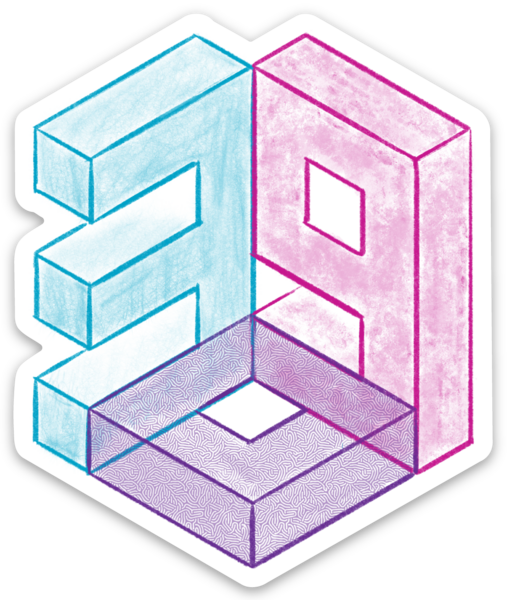
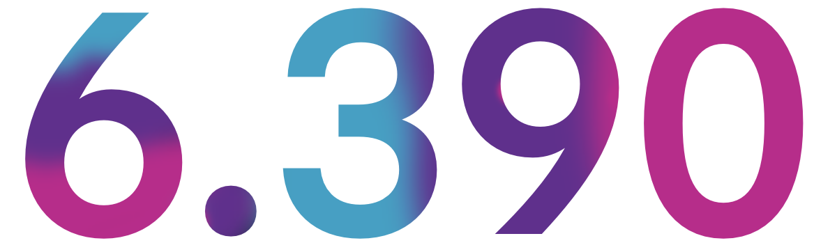

6.390 - Machine Learning’e Giriş


Türkçe Ders Notları
1 Giriş
machine learning’in (ML) ana odak noktası verilere dayalı kararlar veya tahminler almaktır. Teknik açıdan önemli ölçüde örtüşen ancak odak noktasında farklılık gösteren başka alanlar da vardır: Ekonomi ve psikolojide amaç, altta yatan nedensel süreçleri keşfetmek, istatistikte ise bir veri kümesine iyi uyan bir model bulmaktır. Bu alanlarda son ürün bir model’tir. machine learning’te genellikle modeller yerleştiririz, ancak bu, iyi tahminler veya kararlar verme amacına yöneliktir.
Bu açıklama 4/9/12 tarihinde andrewgelman.com adresindeki bir gönderiden alıntılanmıştır.
ML yöntemleri yetenekleri ve kapsamları açısından geliştikçe, ML birçok uygulamaya yaklaşmanın tartışmasız en iyi yolu (hız, insan mühendisliği süresi ve sağlamlık açısından ölçülen) haline geldi. Bunun harika örnekleri arasında yüz algılama, konuşma tanıma ve birçok türde dil işleme görevi yer almaktadır. Gerçek dünyadan gelen verileri veya sinyalleri anlamayı içeren hemen hemen her uygulama, machine learning kullanılarak güzel bir şekilde ele alınabilir.
machine learning yaklaşımlarının problem çözme konusundaki önemli yönlerinden biri, insan mühendisliğinin önemli bir rol oynamasıdır. Bir insanın hala sorunu frame ile çözmesi gerekiyor: verileri elde etmek ve düzenlemek, olası çözümlerden oluşan bir alan tasarlamak, bir learning algorithm ve parametrelerini seçmek, algorithm’i verilere uygulamak, kullanılacak kadar iyi olup olmadığına karar vermek için ortaya çıkan çözümü doğrulamak, dağıtımından etkilenecek insanlar üzerindeki etkisini anlamaya çalışmak vb. Bu adımlar çok önemlidir. önemi.
Bu yön genellikle yeterince değerlendirilmiyor.
Verilerden öğrenmenin kavramsal temeli tümevarım sorunudur: Daha önce görülen verilerin geleceği tahmin etmemize neden yardımcı olacağını düşünüyoruz? Bu uzun süredir devam eden ciddi bir felsefi sorundur. Tüm training data’in i.i.d. (independent and identically distributed) olarak adlandırıldığı ve sorguların training data ile aynı dağıtımdan çekileceği veya yanıtın önceden bilinen bir dizi olası yanıttan geleceği gibi varsayımlar yaparak bunu operasyonel hale getireceğiz.
Bu, kümedeki öğelerin hepsinin aynı temel olasılık dağılımından gelmesi anlamında ilişkili olduğu, ancak başka şekillerde olmadığı anlamına gelir.
Genel olarak şu iki sorunu çözmemiz gerekiyor:
estimation: Temel ilgi miktarının gürültülü yansımaları olan verilerimiz olduğunda, verileri toplamamız ve miktar hakkında tahminler veya tahminler yapmamız gerekir. Örneğin aynı tedavinin farklı denemelerde farklı sonuçlar verebileceği gerçeğiyle nasıl başa çıkacağız? Bir tahminin gelecekteki sonuçlarla ne kadar iyi karşılaştırılabileceğini nasıl tahmin edebiliriz?
generalization: Veri setimizde daha önce hiç karşılaşmadığımız bir durumun veya deneyin sonuçlarını nasıl tahmin edebiliriz?
Üçü sorunu, üçü çözümü karakterize eden altı özelliği kullanarak sorunları ve çözümlerini tanımlayabiliriz:
Problem class: training data’in doğası nedir ve test sırasında ne tür sorgular yapılacak?
Varsayımlar: Verinin kaynağı veya çözümün biçimi hakkında ne biliyoruz?
Değerlendirme kriterleri: Tahmin veya estimation sisteminin amacı nedir? Bireysel sorulara verilen yanıtlar nasıl değerlendirilecek? Sistemin genel performansı nasıl ölçülecek?
Model tipi: Dünyanın orta seviye model’i yapılacak mı? Verilerin hangi yönleri farklı değişkenler/parametreler kullanılarak modellenecek? Tahminlerde bulunmak için model nasıl kullanılacak?
Model class: Hangi class modelleri kullanılacak? model class’ten belirli bir model’i seçmek için hangi kriteri kullanacağız?
Algorithm: model’i verilere sığdırmak ve/veya tahminlerde bulunmak için hangi hesaplama süreci kullanılacak?
Bu kursta ve ML topluluğunda “model” ve “hypothesis” (ve “model class” ve “hypothesis class”) birbirinin yerine kullanılmaktadır. “model” ve “hypothesis”in farklı anlamlar kazandığı MDPs ve RL’e gelinceye kadar bu terimleri genel olarak eşanlamlı olarak kullanacağız; oradaki ayrımı belirteceğiz.
Veriyi oluşturan sürecin doğası hakkında bazı varsayımlarda bulunmadan generalization’i gerçekleştiremeyiz. Aşağıdaki bölümlerde bu fikirleri detaylandıracağız.
1.1 Sorun class
machine learning’te birçok farklı sorun sınıfı vardır. Ne tür verilerin sağlandığı ve bundan ne tür sonuçların çıkarılacağına göre değişirler. Bazı gösterim ve terminolojiyi oluşturmak için aşağıda çeşitli standart problem sınıfları anlatılmıştır.
Bu kursta classification ve regression (supervised learning’in iki örneği) üzerinde duracağız ve reinforcement learning, sequence learning ve clustering’e değineceğiz.
Tüm bu tür öğrenmeleri vb. ezberlemek zorunda olduğunuzu düşünmeyin. Biz sadece alanın genişliğine (bir kısmına) ilişkin çok yüksek düzeyde bir bakış açısına sahip olmanızı istiyoruz.
1.1.1 Supervised learning
supervised öğrenmenin fikri, öğrenme sistemine girdilerin verilmesi ve hangi belirli çıktıların bunlarla ilişkilendirilmesi gerektiğinin söylenmesidir. supervised learning’i, çıktıların küçük bir sonlu kümeden mi (classification) yoksa büyük bir sonlu sıralı kümeden mi yoksa sürekli kümeden mi (regression) alındığına göre bölüyoruz.
1.1.1.1 Regression
Bir regression sorunu için, training data \(\mathcal{D}_\text{train}\), bir \(n\) çiftleri kümesi biçimindedir:
\[\mathcal{D}_\text{train}= \{(x^{(1)}, y^{(1)}), \ldots, (x^{(n)}, y^{(n)})\}, \] burada \(x^{(i)}\) bir input’i, en tipik olarak gerçek ve/veya ayrık değerlerin \(d\) boyutlu vector’ini temsil eder ve \(y^{(i)}\) tahmin edilecek output’tir (bu durumda bir gerçek sayı). Böyle bir vector’in her bir \(x_j\) bileşeni, input’in feature’i olarak adlandırılır (örneğin, bir evin boyutu veya yaşı). \(y\) değerleri bazen hedef değerler olarak adlandırılır.
Birçok ders kitabında \(x^{(i)}\) ve \(y^{(i)}\) yerine \(x_i\) ve \(t_i\) kullanılır. \(x^{(i)}\)’in kendisi bir vector olduğunda bu gösterimi yönetmeyi biraz zor buluyoruz ve onun unsurları hakkında konuşmamız gerekiyor. Kullandığımız gösterim ML literatürünün diğer bazı kısımlarında standarttır.
Bir regression problemindeki amaç, sonuçta, yeni bir input value \(x^{(n+1)}\) verildiğinde, \(y^{(n+1)}\)’in value’ini tahmin etmektir. Regression sorunları bir tür supervised learning’tir, çünkü istenen output \(y^{(i)}\), \(x^{(i)}\) eğitim örneklerinin her biri için belirtilmiştir.
1.1.1.2 Classification
Bir classification problemi regression’a benzer; ancak \(y^{(i)}\)’in alabileceği değerler sıralı değildir. \(y^{(i)}\) (class olarak da bilinir) iki olası değerden oluşan bir kümeden geliyorsa problem binary veya two-class; aksi hâlde multi-class olarak adlandırılır.
1.1.2 Unsupervised learning
Denetimsiz öğrenme, bir dizi input-output çiftine dayalı olarak girişlerden çıkışlara kadar bir işlevin öğrenilmesini içermez. Bunun yerine, kişiye bir veri seti verilir ve genellikle onun doğasında olan bazı kalıpları veya yapıları bulması beklenir.
1.1.2.1 Clustering
\(x^{(1)}, \ldots, x^{(n)} \in \mathbb{R}^d\) örnekleri verildiğinde amaç, benzer örnekleri bir arada gruplayan örneklerin bölümlenmesini (veya “clustering”) bulmaktır. Numuneler arasındaki benzerliğin tanımına ve tam olarak hangi kriterin kullanılacağına bağlı olarak birçok farklı amaç vardır (örneğin, bir cluster içindeki öğeler arasındaki ortalama mesafeyi en aza indirmek ve kümeler arasındaki öğeler arasındaki ortalama mesafeyi en üst düzeye çıkarmak). Diğer yöntemler “yumuşak” bir clustering gerçekleştirir; burada örneklere bir cluster’te 0,9 üyelik ve diğerinde 0,1 üyelik atanabilir. Clustering bazen density estimation olarak adlandırılan (aşağıda açıklanmıştır) adım olarak ve bazen de verilerde yararlı yapı veya etkili özellikler bulmak için kullanılır.
1.1.2.2 Density estimation
Bazı \(\Pr(X)\) dağılımlarından i.i.d. çizilmiş \(x^{(1)}, \ldots, x^{(n)} \in \mathbb{R}^d\) örnekleri verildiğinde amaç, aynı dağılımdan çizilmiş yeni bir \(x^{(n+1)}\) noktasındaki olasılık yoğunluğunu tahmin etmektir. Density estimation bazen supervised learning’in genel öğrenme yönteminde de bir “alt program” olarak rol oynar.
1.1.2.3 Dimensionality reduction
\(x^{(1)}, \ldots, x^{(n)} \in \mathbb{R}^D\) örnekleri verildiğinde sorun, bunları \(d\) boyutlu uzayda noktalar olarak yeniden temsil etmektir; burada \(d < D\). Amaç tipik olarak, örneğin bir class’in öğelerinin diğerinden ayırt edilmesine olanak sağlayacak bilgileri veri kümesinde tutmaktır.
Dimensionality reduction, özellikle yüksek boyutlu verilerin görselleştirilmesi veya anlaşılması için yararlı olan standart bir tekniktir. Amaç sonuçta boyut azaltıldıktan sonra veriler üzerinde regression veya classification gerçekleştirmekse, tahmin görevi için hangi boyutların önemli olacağını bilmeden önce dimensionality reduction yapmak yerine genel tahmin sorununa yönelik bir hedef belirlemek genellikle en iyisidir.
1.1.3 Sequence learning
sequence learning’te amaç, input dizilerinden \(x_1, \ldots, x_k\) ile output dizileri \(y_1, \ldots, y_m\) arasında bir eşleme öğrenmektir. Eşleme tipik olarak bir state makinesi olarak temsil edilir; input verilen bir sonraki gizli dahili state’i hesaplamak için bir \(f_s\) işlevi kullanılır ve \(f_o\) işlevi hesaplamak için kullanılır. Geçerli gizli state verilen output.
Hangi output dizisinin hangi input dizisi için oluşturulacağının bize söylenmesi anlamında denetlenir, ancak dahili işlevlerin doğrudan denetim dışında bir yöntemle öğrenilmesi gerekir çünkü gizli state dizisinin ne olduğunu bilmiyoruz.
1.1.4 Reinforcement learning
reinforcement learning’te amaç, input değerlerinden (tipik olarak bir agent’in veya sistemin durumları olduğu varsayılır; şimdilik, örneğin hareket eden bir arabanın hızını düşünün) output değerlerine (tipik olarak kontrol eylemleri istiyoruz; şimdilik, örneğin hızlanmayı mı yoksa frene mi basmayı düşünün) eşlemeyi öğrenmektir. Ancak belirli bir input için hangi output değerlerinin en iyi olduğunu belirtmek için doğrudan denetim sinyali olmadan eşlemeyi öğrenmemiz gerekir; bunun yerine öğrenme problemi, aşağıdaki ortamda bir agent’in bir environment ile etkileşimi olarak çerçevelenir:
agent mevcut state \({s}_t\)’i gözlemler.
Bir action \({a}_t.\) seçer
Genellikle \({s}_{t}\) ve muhtemelen \({a}_{t}\)’e bağlı olan bir reward, \({r}_{t}\) alır.
environment, yalnızca \({s}_{t}\) ve \({a}_{t}\)’e bağlı bir dağıtımla yeni bir state, \({s}_{t+1}\)’e olasılıksal olarak geçiş yapar.
agent mevcut state, \({s}_{t+1}\)’i gözlemler.
\(\ldots\)
Amaç, \(s\)’i \(a\)’e (yani durumları eylemlere) eşleştiren bir policy \(\pi\) bulmaktır, böylece \(r\) ödüllerinin uzun vadeli toplamı veya ortalaması maksimuma çıkarılır.
Bu ayar supervised learning veya unsupervised learning’ten çok farklıdır çünkü agent’in action seçimleri hem reward’i hem de environment’i gözlemleme yeteneğini etkiler. Eylemlerin uzun vadeli etkilerinin yanı sıra supervised learning ile ilgili diğer tüm konuların dikkatle değerlendirilmesini gerektirir.
1.1.5 Diğer ayarlar
Başka birçok sorun ayarı var. İşte birkaçı.
yarı denetimli öğrenmede, denetimli öğrenme training set’imiz vardır, ancak bilinen bir \(y^{(i)}\) içermeyen ek bir \(x^{(i)}\) değerleri kümesi olabilir. Bu değerler yine de öğrenme performansını iyileştirmek için kullanılabilir (eğer veri kümesinin geri kalanını yöneten \(\Pr(X, Y)\)’in marjinal değeri olan \(\Pr(X)\)’ten alınmışsa).
active öğrenmede, bir label \(y^{(i)}\) edinmenin pahalı olduğu varsayılır (bir insandan X-ışını image’i okumasını istediğinizi hayal edin), böylece learning algorithm sırayla belirli \(x^{(i)}\) girişlerini isteyebilir etiketlenmeli ve etiketleme maliyetini en aza indirirken mümkün olduğunca etkili bir şekilde öğrenmek için sorguları dikkatli bir şekilde seçmelidir.
transfer öğreniminde (meta-learning olarak da bilinir), farklı ancak ilişkili dağıtımlardan alınan verilerle birden fazla görev vardır. Amaç, önceki görevlerle ilgili deneyimin, yeni görevle ilgili deneyimin azalmasını gerektirecek şekilde mevcut bir görevi öğrenmeye uygulanmasıdır.
1.2 Varsayımlar
Veri kaynağı veya çözüm hakkında yapabileceğimiz varsayım türleri şunları içerir:
Veriler independent and identically distributed’tir (i.i.d.).
Veriler bir Markov zinciri tarafından oluşturulur (yani çıkışlar yalnızca geçerli state’e bağlıdır, ek bellek olmadan).
Verileri oluşturan süreç çekişmeli olabilir.
Verileri oluşturan “doğru” model, bazı özel hipotezlerden biriyle mükemmel bir şekilde tanımlanabilir.
Bir varsayımın etkisi genellikle olası hipotezler alanının “boyutunu” veya “anlamlılığını” azaltmak ve dolayısıyla uygun bir hypothesis’i güvenilir bir şekilde tanımlamak için gereken veri miktarını azaltmaktır.
1.3 Değerlendirme kriterleri
Bir class sorununu belirledikten sonra, training data göz önüne alındığında, bir output’i veya bir query’in cevabını iyi yapan şeyin ne olduğunu söylememiz gerekir. Değerlendirme kriterlerini iki düzeyde belirliyoruz: bireysel bir tahminin nasıl puanlandığı ve tahminin veya estimation sisteminin genel davranışının nasıl puanlandığı.
Öğrenilen bir model’ten gelen tahminlerin kalitesi genellikle loss function cinsinden ifade edilir. loss function \(\mathcal{L}(g, a)\), cevap aslında \(a\) olduğunda \(g\) tahmininde bulunduğunuzda ne kadar ceza alacağınızı söyler. Pek çok olası kayıp fonksiyonu vardır. İşte sık kullanılan bazı örnekler:
- 0-1 Loss, sonlu alanlardan alınan tahminler için geçerlidir.
\[\mathcal{L}(g, a) = \begin{cases} 0 & \text{if $g = a$} \\ 1 & \text{otherwise} \end{cases}\]
Squared loss \[\mathcal{L}(g, a) = (g - a)^2\]
Absolute loss \[\mathcal{L}(g, a) = |g - a|\]
Asymmetric loss Birinin kalp krizi geçirip geçirmediğini tahmin etmeye çalıştığınız bir durumu düşünün. Cevap gerçekten “evet” olduğunda “hayır” tahmininde bulunmak, tam tersinden çok daha kötü olabilir.
\[\mathcal{L}(g, a) = \begin{cases} 1 & \text{if $g = 1$ and $a = 0$} \\ 10 & \text{if $g = 0$ and $a = 1$} \\ 0 & \text{otherwise} \end{cases}\]
Herhangi bir prediction rule genellikle birden fazla tahmine ve her birinin kaybına göre değerlendirilecektir. Bu düzeyde aşağıdakilerle ilgilenebiliriz:
Tüm tahminlerde expected loss’i en aza indirme (risk olarak da bilinir)
maximum loss’i en aza indirme: en kötü tahminin kaybı
regret’i en aza indirme veya sınırlandırma: bu tahmincinin bazı class’lerden elde edilen en iyi tahminden ne kadar kötü performans gösterdiği
Asimptotik davranışı karakterize etme: tahmincinin sonsuz training data sınırında ne kadar iyi performans göstereceği
Muhtemelen yaklaşık olarak doğru olan algoritmalar bulma: muhtemelen çoğu zaman doğru olan bir hypothesis üretirler.
’in expected loss’i en aza indirdiği action’i her zaman seçmeniz gerektiğini savunan bir rasyonel kurum teorisi vardır. Bu strateji, örneğin kumar ortamında size uzun vadede en fazla parayı kazandıracaktır. Yukarıda bahsedildiği gibi expected loss, ML literatüründe bazen risk olarak da adlandırılır, ancak bu terim ekonomide veya karar teorisinin diğer kısımlarında başka anlamlara gelir, bu yüzden dikkatli olun…onu kullanmak risklidir. Çoğu zaman bu kritere odaklanacağız.
1.4 Model tipi
Recall Bir ML sisteminin amacı genellikle sağlanan verilere dayanarak tahmin yapmak veya genelleştirmektir. Aşağıda, model yapımının machine learning’teki rolünü inceliyoruz.
1.4.1 Non-parametric models
Bazı basit durumlarda, sorgulara yanıt olarak, herhangi bir ara model oluşturmadan veya daha kesin olarak herhangi bir parametre öğrenmeden doğrudan training data’ten tahminler üretebiliriz.
Örneğin, regression veya classification’te, nearest neighbor yönteminde olduğu gibi, en benzer eğitim örnekleriyle ilişkili çıktıları kullanarak yeni bir query’e yanıt oluşturabiliriz.
1.4.2 Parametric models
Bu iki aşamalı süreç daha tipiktir:
Bir model’i (önceden seçilen bazı parametrelerle) training data’e “Takın”
Tahminlerde bulunmak için doğrudan model’i kullanın
regression veya classification’in parametric models ayarında, model, bazı işlevsel formlar için bazı hypothesis veya prediction rule \(y = h(x ; \Theta)\) olacaktır. \(h\). hypothesis teriminin kökleri, dünyayla ilgili modellerin veya hipotezlerin gerçek verilerle test edildiği ve daha fazla kanıt, gözlem veya içgörüyle iyileştirildiği istatistiksel öğrenme ve bilimsel yönteme dayanmaktadır. Parametrelerin kendilerinin dünya hakkında yaptığımız varsayımların yalnızca bir parçası olduğunu unutmayın. model’in kendisi, daha fazla kanıtla iyileştirilecek bir hypothesis’tir.
Buradaki fikir, \(\Theta\)’in, model’in training data’e yerleştirilmesiyle belirlenecek ve daha sonra test sırasında sabit tutulacak bir veya daha fazla parameter değeri kümesi olmasıdır.
Yeni bir \(x^{(n+1)}\) verildiğinde, \(h(x^{(n+1)}; \Theta)\) tahminini yaparız.
Uydurma süreci genellikle bir optimizasyon problemi olarak ifade edilir: \(\Theta\) ve verileri içeren bazı kriterleri en aza indiren \(\Theta\)’in bir value’ini bulun. Verilerimizin asıl temel dağılımını bilseydik, \(\Pr(X,Y)\) en iyi strateji, expected loss’i en aza indiren \(y\)’in value’ini tahmin etmek olurdu Yukarıda belirtilen risk; pratikte bunu test error) ile tahmin ediyoruz. Eğer elimizde gerçek temel dağılım veya hatta bunun bir tahmini yoksa, training error’i en aza indirme yaklaşımını benimseyebiliriz: yani, training data setimizdeki ortalama kaybı en aza indiren prediction rule \(h\)’i bulabiliriz. Bu nedenle, en aza indiren \(\Theta\)’i ararız.
\[\begin{aligned} \mathcal{E}_\text{train}(h; \Theta) = \frac{1}{n}\sum_{i = 1}^n \mathcal{L}(h(x^{(i)};\Theta), y^{(i)})\;\;, \end{aligned}\] burada loss function \(\mathcal{L}(g, a)\), gerçek value \(a\) olduğunda \(g\) tahmini yapmanın ne kadar kötü olacağını ölçer.
training error’i tek başına en aza indirmenin çoğu zaman iyi bir seçim olmadığını göreceğiz: Mevcut verilere çok güçlü bir şekilde uymayı vurgulamak ve yeni \(x\) değerleriyle sunulduğunda iyi genelleştirilemeyen bir hypothesis ile sonuçlanmak mümkündür.
1.5 Model class ve parameter bağlantısı
model class \({\cal M}\), tipik olarak \(\Theta\) parametrelerinin vector’i tarafından parametrelendirilen bir dizi olası modeldir. model’in biçimi hakkında ne gibi varsayımlarda bulunacağız? Tahmin kuralı yaklaşımını kullanarak bir regression problemini çözerken, verilerimize iyi uyan \(h(x ; \theta, \theta_0) = \theta^T x + \theta_0\) doğrusal fonksiyonunu bulmaya çalışabiliriz. Bu örnekte, parameter vector \(\Theta = (\theta, \theta_0)\).
classification gibi problem türleri için dikkate alınan çok sayıda model sınıfı vardır…bu kursun çoğunu bu model sınıflarını, özellikle de neural network modellerini keşfetmeye ayıracağız. attention’imizi neredeyse tamamen model sınıflarıyla sabit, sınırlı sayıda parametreyle sınırlayacağız. Bu varsayımı gevşeten modellere “parametrik olmayan” modeller adı verilir.
model class’i nasıl seçeriz? Bazı durumlarda, ML uygulayıcısı uygun bir model class’in ne olduğu konusunda iyi bir fikre sahip olacak ve bunu doğrudan belirtecektir. Diğer durumlarda, birkaç model sınıfını dikkate alabilir ve bazı objective function’e dayalı olarak en iyisini seçebiliriz. Bu tür durumlarda, bir model selection problemini çözüyoruz: model selection, (genellikle sonlu) olası model sınıfları kümesinden bir model class \({\cal M}\) seçmektir, oysa model fitting, \(\Theta\) parametreleriyle (genellikle sürekli) belirtilen class içinde belirli bir model seçmektir.
1.6 Algorithm
class modellerini ve model verisini puanlamanın bir yolunu tanımladıktan sonra algoritmik bir problemimiz var: class’imizden iyi bir model bulmak için hangi hesaplama talimatları dizisini çalıştırmalıyız? Örneğin, training error’i en aza indiren parameter vector’in belirlenmesi, model \(h\)’in bazı \(x\) verilerine uyan bir fonksiyon olduğu durumlarda, bilinen en küçük kareler minimizasyonu algorithm kullanılarak yapılabilir.
Bazen genel olarak optimizasyonu gerçekleştirmek için tasarlanmış yazılımları kullanabiliriz. Diğer birçok durumda, ML sorunlarına veya belirli hypothesis sınıflarına özel algoritmalar kullanırız. Bazı algoritmaların belirli bir kriteri optimize etmeye çalıştığı kolayca görülmez. Aslında doğrusal sınıflandırıcıları bulmak için tarihsel olarak önemli bir yöntem olan perceptron algorithm bu karaktere sahiptir.